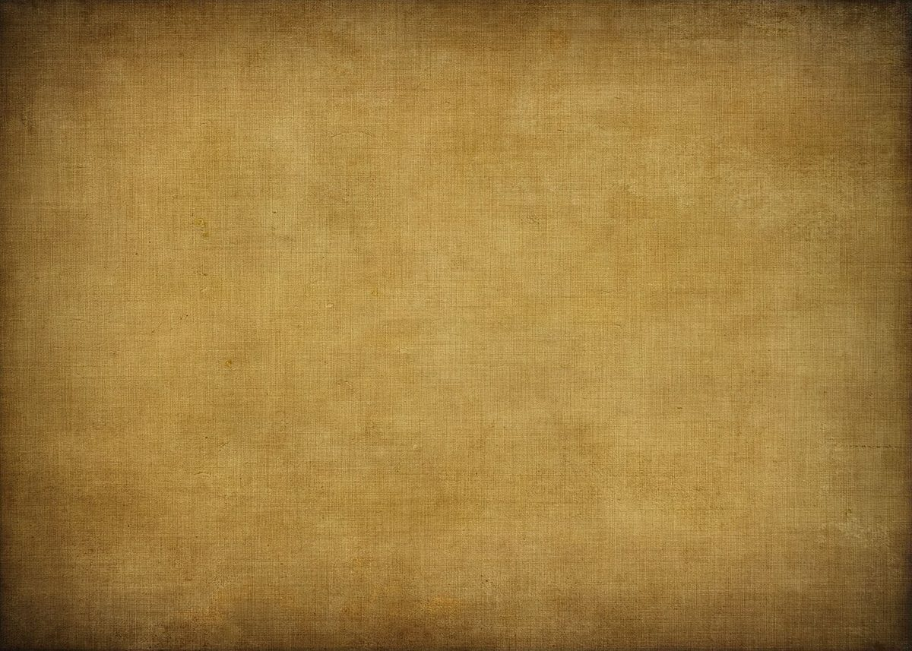

sakugetsu
月の見えない夜
朔月は、月が太陽と同じ方向にあって見えなくなる、新月の日を指します。暗い夜は、新しいはじまりの夜でもあります。
このサイトの配色は、その夜の深い緑と、紅絹(もみ)の赤をひと筋。桐生の織物の裏地に使われてきた色から着想しました。
※デザイン上の見立てです。お店の考えとは別のものです。

写真はイメージです。
群馬県桐生市は、古くから織物の街として知られています。さくげつは、その桐生の宮本町にある小売店です。
ここに掲載しているのは確認できた情報のみです。取扱品や営業時間はこれから確認し、分かり次第お知らせします。
朔月は、月が太陽と同じ方向にあって見えなくなる、新月の日を指します。暗い夜は、新しいはじまりの夜でもあります。
このサイトの配色は、その夜の深い緑と、紅絹(もみ)の赤をひと筋。桐生の織物の裏地に使われてきた色から着想しました。
※デザイン上の見立てです。お店の考えとは別のものです。